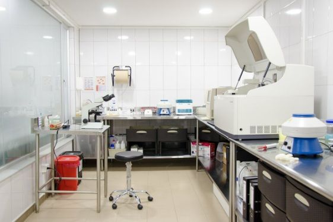
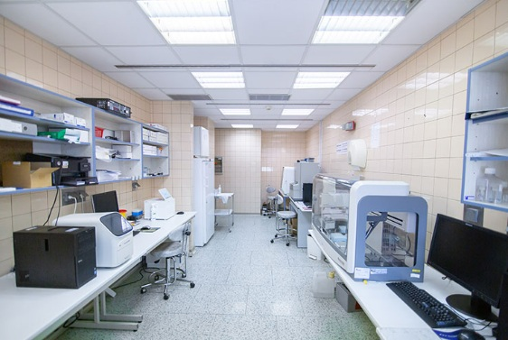

Laboratórios Parceiros
Encontre os melhores laboratórios de análises clínicas próximos a você
Aberto agora
Laboratório Central
Av. Cesario Alvim, 1500 - Aparecida, Uberlândia - MG
06:00 - 18:00
(34) 3333-4444
+50 tipos de exames
Coleta domiciliar
Análises Clínicas
Exames de Sangue
PCR

Aberto agora
Centro de Diagnósticos Avançados
Rua Augusto Cesar, 800 - Copacabana, Uberlândia - MG
07:00 - 19:00
(34) 2222-3333
Exames complexos
Resultado online
Ressonância
Tomografia
Ultrassom

Aberto agora
Lab Genética
Av. Marcos de Freitas Costa, 2000 - Oswaldo Resende, Uberlândia - MG
08:00 - 18:00
(34) 4444-5555
Testes genéticos
Consulta inclusa
Teste de DNA
Aconselhamento
Genética
 Fechado
Fechado
Laboratório Cardio Diagnósticos
Rua Rita, 120 - Morada da Colina, Uberlândia - MG
07:00 - 18:00
(34) 5555-6666
Exames cardíacos
Laudos em 24h
Holter
Ecocardiograma
Teste Ergométrico
 Aberto agora
Aberto agora
Centro de Imagem Diagnóstica
Av. Rondon Pacheco, 1800 - Cazeza, Uberlândia - MG
08:00 - 18:00
(34) 6666-7777
Raio-X Digital
Acessível
Raio-X
Densitometria
Mamografia
 Aberto agora
Aberto agora
Lab Express 24h
Rua Duque de Caxias, 800 - Centro, Uberlândia - MG
06:00 - 18:00
(34) 7777-8888
Coleta 24h
Resultado rápido
Urgência
COVID-19
Toxicológico